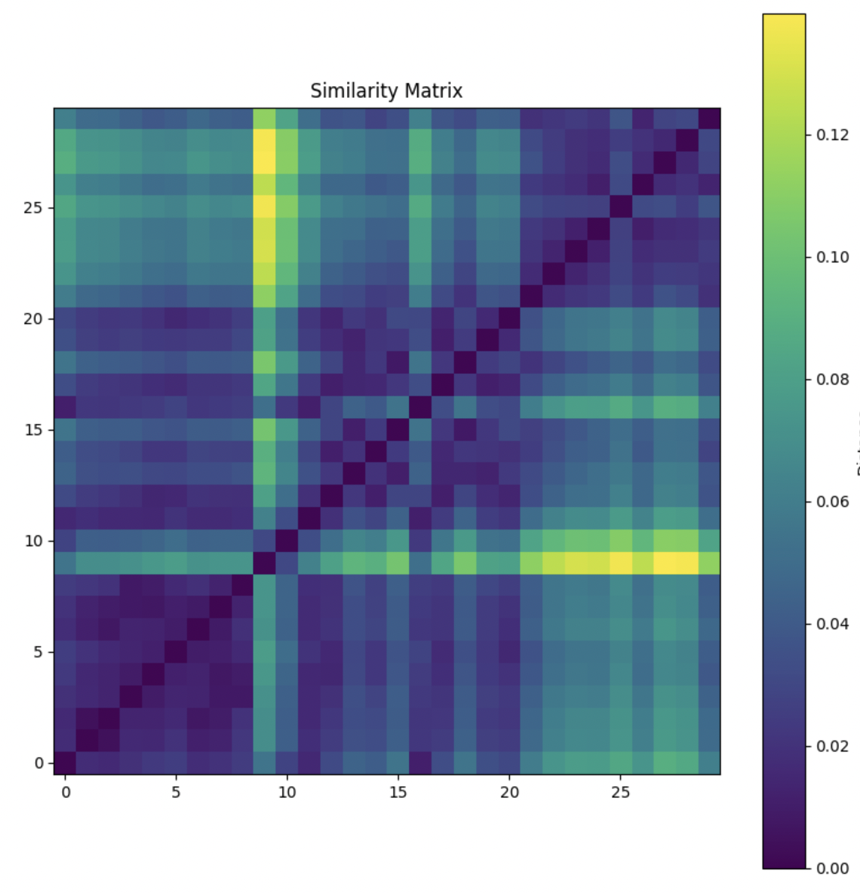

Week 10: Audio Similarity & Transcription
Task 1: Similarity
In this week, I reused the three tracks from Week 9 to formulate a similarity matrix. The darker values represent higher similarity, while the brighter yellow denotes greater differences.
Task 2: Transcription
Here we were tasked in revisiting our score from Week 2. My score relating to my theme was Linger by The Cranberries. I opened this in MuseScore, exported it as a WAV file, loaded this file into SonicVisualizer, and transformed it with polyphonic transcription. This was then exported as a MIDI file, to then be compared with the original composition.
Original from Week 2

Reflection
For this task, I followed the workflow up until the point of re-importing the transcription into MuseScore. I opened the composition in MuseScore, exported it as a WAV file, then loaded and transformed it in SonicVisualizer. Where I faced difficulty was exporting any imaging from the files as MuseScore proved to be incompatible. However, it was clear from SonicVisualizer that the automated transcription altered some aspects of the music. Certain pitches and rhythms were simplified , and overlapping notes weren’t always represented accurately.